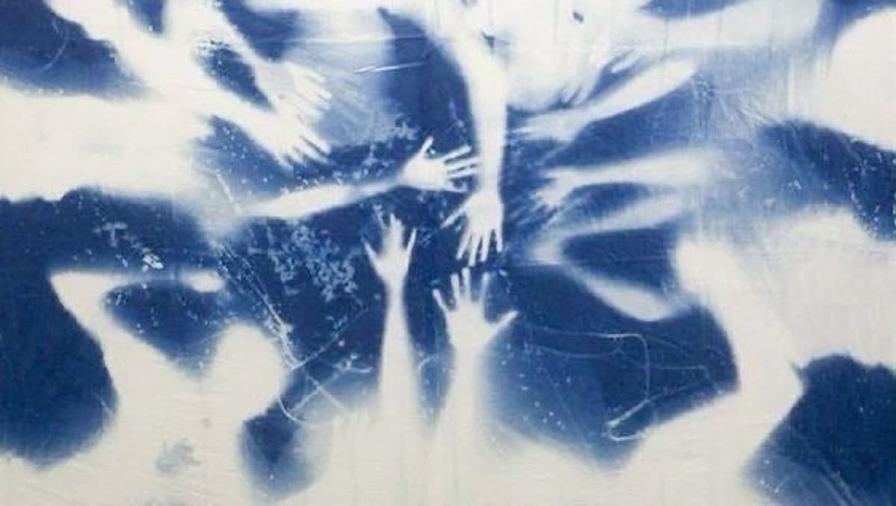

Alquimia Azul
Un viaje visual al siglo XIX: el proceso fotográfico artesanal que transforma la luz del sol en impresiones únicas teñidas de azul de Prusia.

Un viaje visual al siglo XIX: el proceso fotográfico artesanal que transforma la luz del sol en impresiones únicas teñidas de azul de Prusia.
La cianotipia es un fascinante procedimiento fotográfico artesanal que fusiona la química, la luz solar y la naturaleza para dar vida a imágenes únicas en un magnético color azul prusia. Esta técnica histórica, que prescinde por completo de las cámaras fotográficas, consiste en emulsionar papel o tela con una solución sensible a los rayos ultravioleta; sobre esta superficie se componen siluetas de plantas, objetos o negativos que, tras ser expuestos al sol y lavados simplemente con agua, revelan formas de una delicadeza asombrosa. Es un proceso donde el azar y la precisión se encuentran, transformando la luz del día en arte eterno y ofreciendo un lienzo perfecto para diseñadores y creativos que buscan conectar con lo hecho a mano y explorar una sensibilidad visual única e irrepetible.

Se mezclan las sales de hierro en la penumbra y se aplican con brocha sobre el papel, volviéndolo sensible a la luz invisible.

Se disponen las plantas, objetos o filminas sobre el papel seco. Estos elementos bloquean la luz y definen las formas de la imagen.

El soporte se expone a los rayos UV del sol o de una lámpara, activando la reacción química que fija el diseño en el papel.

El papel se lava con agua fría para eliminar los químicos sobrantes y oxidar el hierro, haciendo aparecer el característico azul de Prusia.
